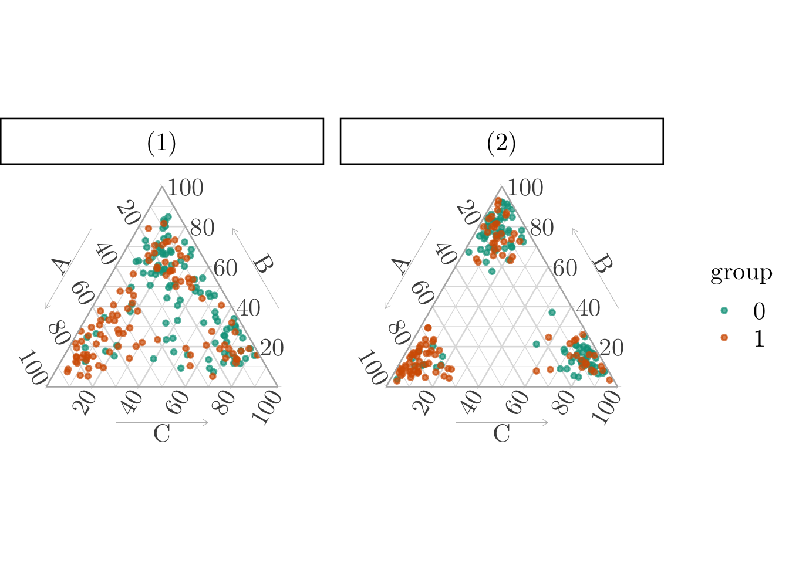
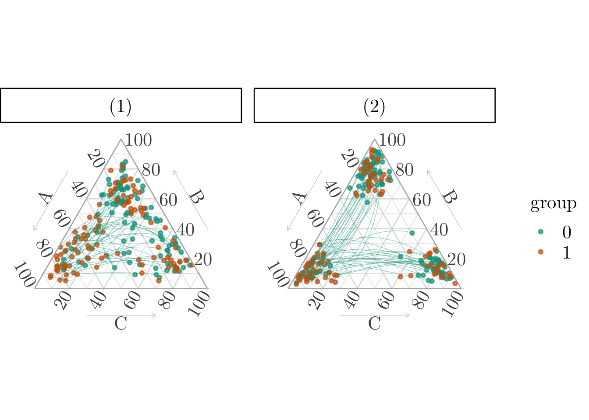

library(dplyr)
library(clue)
library(ggtern)
library(compositions)9 Optimal Transport on Label-Encoded Variables
Objectives
Consider a categorical variable \(x \in \{\text{A}, \text{B}, \text{C}\}\) and two groups, denoted by 0 and 1. The goal is to generate a counterfactual value for \(x\) for individuals in group 0, i.e., what their category might have been had they belonged to group 1.
To do this, the categories are first encoded numerically (e.g., \(\text{A} = 1\), \(\text{B} = 2\), \(\text{C} = 3\)), allowing pairwise distances between individuals in the two groups to be computed in a one-dimensional numerical space.
These distances serve as the cost matrix in the optimal transport problem (more specifically, optimal transport under a hard 1-to-1 constraint, or Monge problem), which is then used to match individuals across groups and generate counterfactual assignments.
Warning
While this label-based approach is simple, it implicitly imposes an ordinal structure on the categories, which may not be appropriate in all contexts. Hence, we do not use it in the paper and we present it here only for illustrative purposes. The method proposed in [Chapter -sec-transp-categ-transport] relaxes this ordinal structure assumption.
\[ \definecolor{wongBlack}{RGB}{0,0,0} \definecolor{wongGold}{RGB}{230, 159, 0} \definecolor{wongLightBlue}{RGB}{86, 180, 233} \definecolor{wongGreen}{RGB}{0, 158, 115} \definecolor{wongYellow}{RGB}{240, 228, 66} \definecolor{wongBlue}{RGB}{0, 114, 178} \definecolor{wongOrange}{RGB}{213, 94, 0} \definecolor{wongPurple}{RGB}{204, 121, 167} %\definecolor{colA}{RGB}{255, 221, 85} %\definecolor{colB}{RGB}{148, 78, 223} %\definecolor{colC}{RGB}{63, 179, 178} \definecolor{colA}{RGB}{0, 114, 178} \definecolor{colB}{RGB}{213, 94, 0} \definecolor{colC}{RGB}{204, 121, 167} \definecolor{colGpeZero}{RGB}{0,160,138} \definecolor{colGpeUn}{RGB}{242, 173, 0} \]
Codes for graphical parameters.
source("../scripts/utils.R")
# col_categ <- c("#ffdd55","#944edf","#3fb3b2")
col_categ <- c("#56B4E9", "#D55E00", "#CC79A7")
colA <- col_categ[1] ; colB <- col_categ[2] ; colC <- col_categ[3]
# col_group <- c("#1b95e0","darkred")
col_group <- c(colours[["0"]], colours[["1"]])
colGpe1 <- col_group[2]
colGpe0 <- col_group[1]
font_size <- 20
font_family <- "CMU Serif"
path <- "./figs/"
if (!dir.exists(path)) dir.create(path)
theme_ggtern_paper <- function(...) {
font_family <- "CMU Serif"
font_size <- 20
theme(
strip.background = element_rect(colour = "black", fill = NA),
strip.text.x = element_text(colour = "black"),
strip.text = ggtext::element_markdown(),
text = element_text(family = font_family, size = unit(font_size, "pt")),
axis.title = element_text(size = rel(.8)),
tern.axis.arrow.show = TRUE,
tern.axis.arrow.sep = .13,
tern.axis.vshift = .05,
panel.border = element_rect(colour = NA)
)
}
theme_paper <- function(...) {
font_family <- "CMU Serif"
font_size <- 20
theme(
text = element_text(family = font_family, size = unit(font_size, "pt")),
plot.background = element_rect(fill = "transparent", color = NA),
# legend.text = element_text(size = rel(.8)),
# legend.title = element_text(size = rel(.8)),
# legend.title = element_text(size = .8*font_size),
# legend.text = element_text(size = .8*font_size)
legend.key = element_blank(),
panel.spacing = unit(1, "lines"),
panel.background = element_rect(fill = NA),
panel.grid.major = element_line(colour = "grey80"),
plot.title = element_text(hjust = 0, size = rel(1.3), face = "bold"),
plot.title.position = "plot",
strip.background = element_rect(fill = NA, colour = NA)
# strip.text = element_text(size = rel(1))
)
}As in the previous chapter (Chapter 11), consider a categorical variables \(x \in \{{\color{colA}A}, {\color{colB}B}, {\color{colC}C}\}\). Let Group 0 and Group 1 represent two subpopulations, in which the distribution of \(x\) differs
Let us generate a dummy data set with 100 individuals in both Group 0 and Group 1.
set.seed(1234)
n <- 100
n0 <- n1 <- n
p0 <- c(0.1, 0.5, 0.4)
p1 <- c(0.5, 0.3, 0.2)
# Sample category
x0 <- sample(c(rep("A", p0[1] * n0), rep("B", p0[2] * n0), rep("C", p0[3] * n0)), replace = FALSE)
x1 <- sample(c(rep("A", p1[1] * n1), rep("B", p1[2] * n1), rep("C", p1[3] * n1)), replace = FALSE)
cat_levels <- c("A", "B", "C")Now, assume we were able to estimate the propensities of belonging to each category, using a probabilistic classifier. Here, instead of really training a classifier, we simply draw the values from a Dirichlet distribution, using rdirichlet() from {MCMCpack}. We consider two different scenarios:
- Low concentration of propensities around the mean,
- High concentration of propensities around the mean.
library(MCMCpack)set.seed(12345)
alpha_A <- c(9, 3, 2)
Z_A <- as.data.frame(rdirichlet(n0 + n1, alpha_A))
alpha_B <- c(3, 11, 4)
Z_B <- as.data.frame(rdirichlet(n0 + n1, alpha_B))
alpha_C <- c(2, 3, 9)
Z_C <- as.data.frame(rdirichlet(n0 + n1, alpha_C))
# For each observation from group 0 and matched obs from group 1, we have
# drawn a category (A, B, or C).
# We add drawn propensities, depending on the category
Z <- Z_A
category <- c(x0, x1)
Z[category == "B", ] <- Z_B[category == "B", ]
Z[category == "C", ] <- Z_C[category == "C", ]
tb_sample_z <- as_tibble(Z)
names(tb_sample_z) <- c("A", "B", "C")
tb_sample_z$group <- factor(c(rep(0, n0), rep(1, n1)), levels = c(0, 1))
tb_sample_z_1 <- tb_sample_z
tb_sample_z_1# A tibble: 200 × 4
A B C group
<dbl> <dbl> <dbl> <fct>
1 0.222 0.645 0.134 0
2 0.241 0.0742 0.685 0
3 0.214 0.571 0.215 0
4 0.700 0.247 0.0526 0
5 0.332 0.242 0.426 0
6 0.224 0.495 0.281 0
7 0.213 0.607 0.180 0
8 0.735 0.195 0.0703 0
9 0.0230 0.156 0.821 0
10 0.0454 0.456 0.499 0
# ℹ 190 more rowsset.seed(1234)
alpha_A <- c(19, 3, 2)
Z_A <- as.data.frame(rdirichlet(n0 + n1, alpha_A))
alpha_B <- c(3, 17, 2)
Z_B <- as.data.frame(rdirichlet(n0 + n1, alpha_B))
alpha_C <- c(2, 3, 17)
Z_C <- as.data.frame(rdirichlet(n0 + n1, alpha_C))
# For each observation from group 0 and matched obs from group 1, we have
# drawn a category (A, B, or C).
# We add drawn propensities, depending on the category
Z <- Z_A
category <- c(x0, x1)
Z[category == "B", ] <- Z_B[category == "B", ]
Z[category == "C", ] <- Z_C[category == "C", ]
tb_sample_z <- as_tibble(Z)
names(tb_sample_z) <- c("A", "B", "C")
tb_sample_z$group <- factor(c(rep(0, n0), rep(1, n1)), levels = c(0, 1))
tb_sample_z_2 <- tb_sample_z
tb_sample_z_2# A tibble: 200 × 4
A B C group
<dbl> <dbl> <dbl> <fct>
1 0.147 0.824 0.0293 0
2 0.0545 0.108 0.837 0
3 0.144 0.772 0.0841 0
4 0.681 0.151 0.168 0
5 0.782 0.110 0.108 0
6 0.0319 0.847 0.121 0
7 0.196 0.751 0.0535 0
8 0.789 0.107 0.104 0
9 0.203 0.0894 0.708 0
10 0.0776 0.0739 0.849 0
# ℹ 190 more rowsThe categorical variable in the simplex, using the simulated propensity scores, can be visualized on a ternary plot (Figure 11.2).
Codes to create the Figure.
p <- ggtern(
data = tb_sample_z_1 |> mutate(type = "(1)") |>
bind_rows(
tb_sample_z_2 |> mutate(type = "(2)")
),
mapping = aes(x = A, y = B, z = C)) +
geom_point(size = 1, alpha = 0.7, mapping = aes(color = group)) +
scale_colour_manual(name = "group",values = col_group) +
facet_wrap(~ type) +
theme_light(base_size = font_size, base_family = font_family) +
theme_ggtern_paper() +
theme(
legend.title = element_text(size = .8 * font_size),
legend.text = element_text(size = .8 * font_size),
tern.axis.vshift = .08,
tern.axis.arrow.sep = .16,
) +
# theme_latex(TRUE)
theme_hidetitles()
p

9.1 Matching
We apply 1-to-1 matching, setting numeric values to each category: A=1, B=2, C=3.
We define the absolute distance between the numerical values as the cost.
x0_index <- match(x0, cat_levels)
x1_index <- match(x1, cat_levels)
cost_matrix <- outer(x0_index, x1_index, function(i, j) abs(i - j))
# 1-1 matching
assignment <- solve_LSAP(cost_matrix)
# Store this in a tibble
tb_coupling <- tibble(
x0 = x0,
x1 = x1[assignment]
) |>
mutate(
cost = abs(match(x0, cat_levels) - match(x1, cat_levels))
)The matching can be visualized on a ternary plot (Figure 9.2).
# Create interpolated values using McCann (1997) displacement
f_line_simplex <- function(x,
y,
lgt = 601) {
zx <- as.numeric(clr(x))[1:2]
zy <- as.numeric(clr(y))[1:2]
t <- seq(0, 1, length = lgt)
tx <- cbind(
(1 - t) * zx[1] + t * zy[1],
(1 - t) * zx[2] + t * zy[2]
)
tx <- cbind(tx, -(tx[, 1] + tx[, 2]))
df <- as.data.frame(matrix(as.numeric(clrInv(tx)), lgt, 3))
names(df) <- c("A","B","C")
df
}
idx <- which(tb_coupling$cost != 0)
# Ise the plot from previous figure as a baseline
p_matching <- p
# Draw a line joining the matched observations.
for (i in idx) {
lines_1 <- f_line_simplex(
x = tb_sample_z_1[i, 1:3],
y = tb_sample_z_1[n + assignment[i], 1:3],
lgt = 101
)
lines_2 <- f_line_simplex(
x = tb_sample_z_2[i, 1:3],
y = tb_sample_z_2[n + assignment[i], 1:3],
lgt = 101
)
lines_both <- as_tibble(lines_1) |> mutate(type = "(1)") |>
bind_rows(
as_tibble(lines_2) |> mutate(type = "(2)")
)
p_matching <- p_matching +
geom_line(
data = lines_both,
mapping = aes(x = A, y = B, z = C),
color = col_group[1], linewidth = .2,, alpha = .5,
arrow = arrow(length = unit(0.20, "cm"))
)
}
p_matching

Codes to export the figures in PDF.
filename <- "ternary-categ-ot"
ggsave(
p_matching, file = str_c(path, filename, ".pdf"),
height = 2*1.75, width = 3.75*1.75,
family = font_family,
device = cairo_pdf
)
# Crop PDF
system(paste0("pdfcrop ", path, filename, ".pdf ", path, filename, ".pdf"))In Chapter 10, rather than defining distances between individuals based on arbitrary numerical encodings of categorical values, we use each individual’s estimated propensity to belong to each category. This yields a probability vector on the simplex, and optimal transport is then performed within the simplex space.